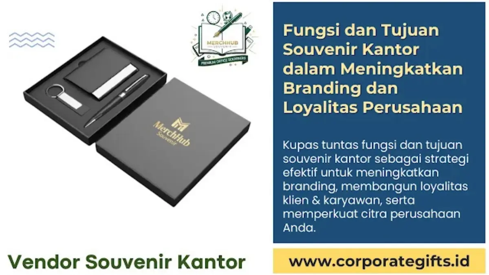

Corporate Gifts ID - Fungsi dan tujuan souvenir kantor adalah sebagai strategi komunikasi pemasaran terpadu untuk membangun brand awareness, mempererat loyalitas pemangku kepentingan (stakeholder), dan mengapresiasi kinerja karyawan. Lebih dari sekadar hadiah seremonial, souvenir perusahaan yang dirancang dengan standar mutu tinggi berfungsi sebagai duta visual (brand ambassador) bergerak yang menanamkan persepsi profesionalisme, kredibilitas, serta memelihara relasi bisnis jangka panjang.
Poin Kunci Fungsi & Tujuan Souvenir Kantor:
- Duta Visual Portabel: Menghadirkan eksposur merek harian tanpa biaya iklan berkelanjutan berkat utilisasi produk fungsional.
- Pengungkit Retensi B2B: Memperkuat ikatan emosional mitra kerja dan klien korporat sehingga memperpanjang siklus kontrak kerja sama.
- Penguat Budaya Kerja: Menghargai dedikasi karyawan internal guna menekan angka pengunduran diri (turnover) serta menumbuhkan kebanggaan tim.
- Refleksi Mutu Perusahaan: Kualitas material fisik cinderamata menjadi tolok ukur nyata komitmen perusahaan terhadap keunggulan layanan.
Dalam lanskap persaingan bisnis yang semakin ketat, pengadaan barang promosi tidak boleh lagi dipandang sebagai pengeluaran biaya konsumtif semata. Para pembuat keputusan di divisi pengadaan (procurement), HRD, dan tim corporate communication kini menempatkan alokasi anggaran souvenir kantor sebagai investasi strategis dengan kalkulasi imbal hasil yang nyata (Return on Investment / ROI).
Pengertian Souvenir Kantor Modern
Secara konseptual, souvenir kantor modern adalah barang promosi, merchandise, atau cinderamata eksklusif yang dikurasi khusus oleh korporasi untuk diserahkan kepada karyawan, klien bisnis, investor, maupun tamu kehormatan dalam agenda resmi. Karakteristik utama dari souvenir korporat terletak pada integrasi identitas visual seperti logo resmi, slogan perusahaan, atau palet warna khas yang diterapkan secara presisi melalui teknik grafir laser, sablon presisi, maupun UV printing.
Klasifikasi souvenir kantor kontemporer terbagi ke dalam beberapa kelompok fungsional utama:
- Perlengkapan Kerja Eksekutif: Meliputi buku agenda kulit bersampul keras, pena berbahan logam premium, dan kartu nama pemegang magnetik.
- Peralatan Gaya Hidup & Hidrasi: Termasuk botol minum insulasi termal (vacuum tumbler), cangkir keramik elegan, dan payung lipat kokoh.
- Aksesori Teknologi Portabel: Meliputi powerbank fast-charging, tetikus nirkabel (wireless mouse), flashdisk USB OTG ganda, dan dudukan pengisi daya cepat.
- Gift Set Personalisasi: Paket bingkisan yang dikemas dalam kotak kaku eksklusif (rigid hardbox) lengkap dengan grafir nama penerima secara personal.
5 Fungsi Strategis Souvenir Kantor bagi Korporasi
Pemberian cinderamata kantor bukan sekadar ritual formalitas saat perhelatan acara. Berikut adalah lima pilar fungsi strategis yang berkontribusi langsung pada performa bisnis:
1. Saluran Promosi dan Eksposur Merek Jangka Panjang
Berbeda dengan iklan media sosial berbayar yang berhenti tampil saat anggaran harian habis, souvenir fisik fungsional memiliki usia pakai bertahun-tahun. Ketika seorang klien membawa tumbler berlogo perusahaan Anda ke ruang rapat publik atau menggunakan notebook di kafe, logo Anda mendapatkan eksposur organik berkelanjutan di hadapan calon audiens baru tanpa tambahan biaya promosi sepeser pun.
2. Medium Apresiasi Tulus untuk Pemangku Kepentingan
Pengakuan atas kontribusi kerja maupun kerja sama bisnis terasa jauh lebih menyentuh ketika diwujudkan dalam bentuk fisik yang berharga. Souvenir kantor premium menyampaikan pesan bahwa manajemen perusahaan benar-benar menghargai waktu, dedikasi, serta kepercayaan yang telah diberikan oleh karyawan dan mitra dagang.
3. Perekat Hubungan Emosional dan Loyalitas Relasi
Dalam prinsip psikologi pertukaran sosial, sebuah gestur penghargaan positif akan memicu rasa keterikatan batin (reciprocity). Mitra B2B yang rutin menerima cinderamata bermutu tinggi cenderung mempertahankan kontrak kerja sama, sementara karyawan internal merasa lebih dihargai sehingga motivasi kerja meningkat secara signifikan.
4. Manifestasi Profesionalisme dan Standar Kualitas
Kualitas souvenir kantor adalah cerminan langsung dari kredibilitas institusi. Barang promosi yang rapuh atau mudah rusak dapat merusak reputasi perusahaan. Sebaliknya, cinderamata dengan bahan kokoh, sambungan rapi, dan kemasan mewah menegaskan bahwa perusahaan Anda selalu mengedepankan standar kualitas tanpa kompromi.
5. Pembeda Nyata dari Kompetitor Pasar (Diferensiasi)
Ketika banyak kompetitor hanya mengandalkan promosi verbal, kehadiran paket souvenir custom VIP yang dirancang unik akan menancapkan ingatan kuat di benak klien. Keunikan inilah yang membuat brand Anda selalu menjadi pilihan utama saat mitra membutuhkan solusi bisnis di masa mendatang.

Pilihan gift set souvenir kantor fungsional dan merchandise berlogo resmi untuk penguatan engagement stakeholder.
Tujuan Utama Pengadaan Cinderamata Perusahaan
Agar anggaran pengadaan menghasilkan dampak nyata, setiap perusahaan perlu menyelaraskan jenis cinderamata dengan target tujuan organisasi yang ingin dicapai:
- Akselerasi Brand Recall: Memastikan logo, warna, dan identitas perusahaan selalu hadir di lingkungan kerja sehari-hari audiens sasaran sehingga mudah diingat sewaktu-waktu.
- Retensi Klien Korporat B2B: Mengurangi risiko perpindahan klien ke penyedia jasa lain dengan terus merawat kehangatan relasi melalui cinderamata tahunan atau momen hari raya.
- Peningkatan Keterikatan Staf (Employee Engagement): Memberikan perlengkapan kerja baru saat proses orientasi (onboarding kit) guna menyuntikkan rasa bangga terhadap bendera korporat.
- Dukungan Suksesi Momen Korporasi: Memeriahkan seremoni tahunan, penandatanganan kerja sama (MoU), perayaan pencapaian target target bisnis, maupun peluncuran unit usaha baru.
Analisis ROI dan Metrik Efektivitas Branding
Salah satu kekeliruan umum manajemen adalah memperlakukan biaya souvenir semata-mata sebagai biaya operasional umum (overhead cost). Padahal, jika dikalkulasi menggunakan parameter pemasaran, souvenir fungsional memiliki metrik Cost Per Impression (CPI) paling ekonomis dibandingkan media pemasaran konvensional.
Sebagai ilustrasi, sebuah botol tumbler stainless insulasi seharga Rp 85.000,- dengan masa pakai aktif rata-rata 2 tahun (730 hari) akan digunakan di meja kantor, ruang seminar, maupun pusat kebugaran. Jika diasumsikan produk tersebut dilihat oleh 5 orang berbeda per hari, maka produk tersebut menghasilkan 3.650 impresi visual. Biaya per impresinya hanya berkisar Rp 23,- per tayangan, angka yang jauh lebih hemat dibandingkan biaya klik iklan digital berbayar yang kian mahal.
Tabel Komparasi Jenis Souvenir dan Sasaran Audiens
Menentukan pilihan produk yang tepat bergantung pada segmentasi penerima serta misi komunikasi yang diemban. Berikut adalah matriks panduan komparasi jenis souvenir kantor:
| Kategori Souvenir | Contoh Produk Populer | Sasaran Penerima | Dampak Strategis |
|---|---|---|---|
| Office Executive Set | Agenda kulit magnetik, pulpen logam grafir laser, card holder kulit | Klien B2B VIP, jajaran direksi, mitra diplomatik | Meningkatkan prestise, citra eksklusif, dan retensi kemitraan jangka panjang |
| Smart Tech Gadgets | Powerbank fast-charging, wireless charging pad, USB flashdisk OTG | Karyawan milenial, peserta expo teknologi, delegasi seminar | Menguatkan citra perusahaan modern, adaptif teknologi, dan serba praktis |
| Eco-Friendly Products | Tumbler bambu stainless, tote bag kanvas organik, cutlery set kayu | Komunitas CSR, mitra peduli lingkungan, generasi muda | Mempertegas komitmen keberlanjutan (ESG) dan kepedulian lingkungan |
| Daily Functional Gear | Payung otomatis tahan angin, mug keramik matte, lanyard ID card tissue | Karyawan operasional, peserta rapat kerja, pelanggan ritel | Menghasilkan impresi merek berulang dalam mobilitas harian di tempat umum |
Tren Souvenir Kantor Inovatif 2025-2026
Perilaku kerja hibrida (hybrid working) dan kesadaran lingkungan telah mengubah selera penerima cinderamata. Berikut tren terkini yang mendominasi pengadaan korporat modern:
- Sentuhan Personalisasi Nama: Bukan hanya mencetak logo korporasi, souvenir kini dilengkapi ukiran nama masing-masing individu penerima. Teknik grafir laser presisi memberikan sentuhan keintiman yang membuat penerima merasa sangat diistimewakan.
- Material Berkelanjutan (Sustainable Sourcing): Penggunaan material jerami gandum (wheat straw), kayu bambu terbarukan, serta kain rPET hasil daur ulang botol plastik semakin digemari oleh perusahaan yang mengedepankan laporan keberlanjutan.
- Minimalis Fungsional: Desain barang yang ringkas, berbobot ringan, serta mudah dimasukkan ke dalam ransel kerja menjadi kriteria mutlak agar produk tidak hanya tersimpan di lemari.
- Kemasan Rigid Hardbox Elegan: Penampilan luar menentukan impresi pertama. Penggunaan kotak kardus tebal berlapis kertas import dengan cetak hot-print foil emas atau perak mampu melipatgandakan persepsi nilai hadiah.
Panduan Memilih Souvenir Kantor Tepat Sasaran
Untuk menghindari pemborosan anggaran tanpa hasil nyata, ikuti lima langkah terstruktur dalam proses pemilihan souvenir kantor berikut:
- Petakan Karakter dan Profil Penerima: Kenali usia, jabatan kerja, dan rutinitas harian calon penerima. Eksekutif senior lebih mengapresiasi gift set kulit elegan, sedangkan peserta lokakarya kreatif lebih menyukai perkakas teknologi nirkabel.
- Pilih Barang dengan Nilai Utilitas Tinggi: Hindari barang pajangan statis yang rawan menjadi tumpukan debu. Prioritaskan benda yang selalu menemani aktivitas kerja sehari-hari.
- Kawal Kepatuhan Panduan Identitas Brand (Brand Guidelines): Pastikan letak logo, proporsi dimensi, serta kode warna tinta sablon atau UV sesuai persis dengan standar pedoman visual perusahaan Anda.
- Minta Sampel Fisik (Proofing) Sebelum Produksi Massal: Jangan hanya terpaku pada gambar rancangan digital. Periksa tekstur bahan, kerapian jahitan, dan keakuratan hasil cetak secara langsung.
- Bermitra dengan Vendor Kredibel dan Legal: Pilih penyedia merchandise perusahaan yang memiliki legalitas badan usaha resmi, kapasitas produksi mandiri, serta garansi ketepatan waktu pengiriman demi kelancaran agenda event Anda.
Kesimpulan: Investasi Jangka Panjang Brand Korporat
Souvenir kantor memiliki peran yang jauh melampaui sekadar bingkisan formalitas. Sebagai instrumen komunikasi taktis, cinderamata kantor yang berkualitas mampu menjalankan fungsi branding organik, mempererat relasi bisnis dengan klien utama, serta menumbuhkan loyalitas mendalam di kalangan karyawan internal.
Dengan perencanaan yang matang, pemilihan material yang fungsional, dan eksekusi kemasan yang eksklusif, setiap rupiah yang dialokasikan untuk pengadaan souvenir kantor akan menjelma menjadi investasi berharga yang memacu pertumbuhan dan reputasi korporasi di masa depan.
Pertanyaan Seputar Souvenir Kantor (FAQ)

Ditulis oleh: Vendor Souvenir Kantor
Senior Corporate Merchandise ConsultantTim konsultan spesialis CorporateGifts.ID berpengalaman dalam formulasi strategi pengadaan cinderamata korporat, kurasi gift set VIP, teknik cetak industri, dan kemitraan B2B di Indonesia.
Lihat Profil Lengkap & Portofolio